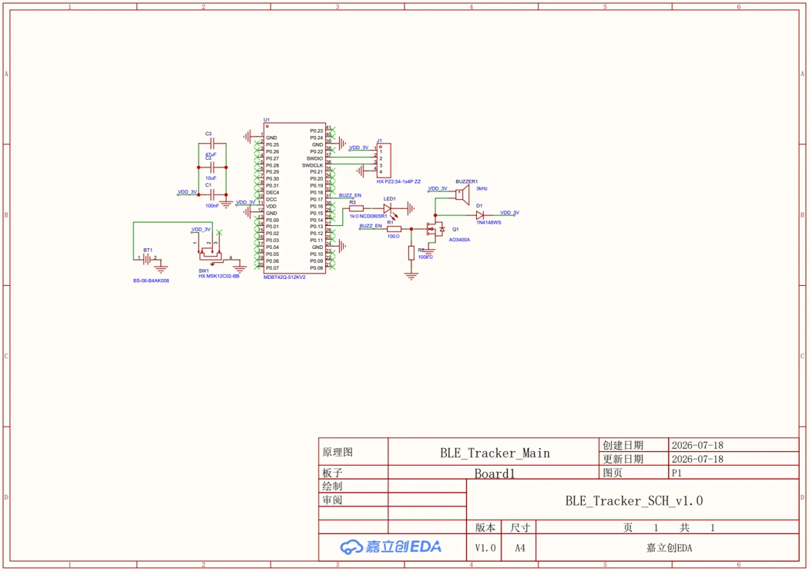

返回硬件项目索引
返回硬件项目索引低功耗蓝牙蜂鸣寻物标签
阅读项目文档 ↓本项目基于nRF52832芯片，开发了一款可通过手机控制的低功耗蓝牙蜂鸣寻物标签。设备采用CR2032电池供电，由SW1开关控制通断。
在固件逻辑上，系统上电后首先初始化GPIO，将高电平有效的P0.17引脚初始置低，防止蜂鸣器上电误响。针对自制PCB未外接32.768kHz晶振的情况，系统改用芯片内部RC低频时钟，确保BLE协议栈及Nordic_LBS服务的正常初始化与广播。
交互方面，用户通过手机端nRF Connect软件扫描并连接标签，向LBS可写特征发送ON/OFF指令。固件回调函数接收后改变P0.17引脚电平，驱动A03400A MOSFET导通或截止，从而控制蜂鸣器发声或停止。
在寻物定位上，采用“RSSI粗测+蜂鸣精确定位”的双重逻辑：用户先根据手机端RSSI信号强度（数值越接近0距离越近）判断大致方位，最终依靠蜂鸣器的声音在近距离内实现精准寻找。

项目文档
项目介绍（BLE Tracker，低功耗蓝牙蜂鸣寻物标签）
项目介绍（BLE Tracker，低功耗蓝牙蜂鸣寻物标签）
mentor孔繁晔
项目简介
本项目设计并实现了一款基于低功耗蓝牙技术的便携式蜂鸣寻物标签。设备可固定在钥匙、耳机盒等容易遗失的物品上。用户通过手机连接标签后，可以远程控制蜂鸣器发声，并结合手机显示的蓝牙信号强度判断大致寻找方向，最终依靠声音完成近距离定位。
项目选用 Raytac MDBT42Q-512KV2 作为主控模块。该模块内部集成 Nordic nRF52832 芯片、32 MHz 高频晶振和2.4 GHz陶瓷天线，具有体积小、功耗低、蓝牙功能完善等特点。nRF52832 内含 512 KB Flash 和 64 KB RAM，能够运行 Zephyr 实时操作系统、低功耗蓝牙协议栈以及本项目的控制程序。与直接使用裸芯片相比，模块化方案减少了高频晶振和射频天线部分的设计难度，更适合小型蓝牙设备的开发。
设备以 CR2032 纽扣电池供电，通过 SW1 机械开关控制整机电源。最终产品的主要运行过程如下：
1. 打开电源开关后，nRF52832 初始化 GPIO、低频时钟和蓝牙协议栈。
2. 固件启动 Nordic LED Button Service，即 LBS，并以“Nordic_LBS”作为设备名称进行蓝牙广播。
3. 手机使用 nRF Connect 等蓝牙调试软件扫描并连接设备。
4. 手机向 LBS 的可写特征写入 ON 或 OFF。
5. 固件中的回调函数接收到写入状态，并将 P0.17 引脚输出为高电平或低电平。
6. P0.17 控制 AO3400A N 沟道 MOSFET导通或截止，进而控制有源蜂鸣器发声或停止。
7. 用户可以观察手机显示的 RSSI 数值。当 RSSI 总体上逐渐接近0时，通常说明手机正在接近标签；进入较近范围后，再通过蜂鸣声完成最终定位。
需要说明的是，RSSI 会受到人体遮挡、物体材质、天线方向、空间反射和环境干扰等因素影响，因此本项目将其作为“远、中、近”和寻找方向的辅助依据，而不把它当作精确的距离测量结果。
项目成长：迭代与改错记录
1. 从开发板验证到自制 PCB
项目初期先使用 nRF52 DK 开发板运行 Blinky 和 Nordic peripheral_lbs 官方示例，分别验证 GPIO、编译烧录工具链、BLE 广播、手机连接和 GATT 数据写入功能。开发板测试成功后，再将程序迁移到自制 PCB。
这种方式的目的是建立一条可靠基线：如果官方示例在开发板上可以运行，而迁移到自制板后出现问题，就应重点检查自制板的引脚、时钟、电源、焊接和设备树配置，而不是一开始就怀疑整个 SDK。
2. 从开发板专用接口改为通用 GPIO
官方示例原本通过 DK 开发板专用的 dk_buttons_and_leds 接口控制板载按键和指示灯，但自制 PCB 没有相同的硬件结构，因此不能直接照搬。
项目将其改为 Zephyr 通用 GPIO 接口，通过设备树别名找到自制板上的输出引脚。其中，P0.17 被定义为蜂鸣器使能信号 buzz-en，由手机写入的 ON/OFF 状态直接控制。
与此同时，在 Overlay 中关闭开发板默认的 button1、led0 和 pwm0，防止这些默认设备再次占用项目需要的 GPIO。修改后，P0.17 只承担蜂鸣器控制功能，解决了“一根引脚被多个功能同时使用”的冲突。
3. 修复 C 语言语法错误
一次手动代码修改中，int main(void) 后缺少左花括号。这个局部错误导致编译器无法正确识别函数体，继而产生大量看似无关的错误信息。
最终从编译器输出的第一条错误开始排查，找到缺失的花括号并修复，后续连锁错误随之消失。此次问题说明：编译日志中的第一条错误通常最接近根本原因，后面的几十条错误可能只是语法结构被破坏后的连锁结果。
4. 修正低频时钟配置
nRF52 DK 开发板带有外部32.768 kHz低频晶振，而本项目的自制 PCB 没有安装该晶振。程序最初仍沿用了开发板默认配置，导致固件虽然能够完成编译和烧录，但蓝牙初始化或广播可能无法正常进行。
随后在 prj.conf 中加入：
Plain Text
CONFIG_CLOCK_CONTROL_NRF_K32SRC_RC=y
该配置让 nRF52832 使用内部 RC 振荡器产生低频时钟，使程序设置与实际硬件一致。修改后，蓝牙协议栈能够继续完成初始化和广播。
5. 通过 Pristine Build 解决旧配置残留
修改 Overlay、Kconfig 或引脚配置后，曾出现“代码已经修改，但运行结果没有变化”的现象。原因是构建目录中保留着旧的 CMake 缓存、设备树生成结果和 Kconfig 配置。
执行 Pristine Build 后，系统删除原构建目录并重新生成所有配置，新的设备树和时钟设置才真正进入固件。
此次问题说明，普通 Build 主要重新编译发生变化的文件，而 Pristine Build 会从干净状态重新配置工程。涉及设备树、板级配置、Kconfig 或构建目标变化时，应优先使用 Pristine Build。
6. 解决 SWD 连接不稳定
自制 PCB 调试时曾出现以下错误：
Plain Text
Failed to write DebugPort register 0x08
No probes connected via USB
Could not connect to target
调试期间还读到过不断变化的芯片识别码，而稳定连接时应读取到固定的 0x2BA01477。变化的识别码说明 SWD 物理通信存在误码，重点应检查供电、共地、焊点、线长和接触情况。
项目通过检查 VDD、GND、SWDIO、SWDCLK，清理模块焊点、缩短连接线、改善排针接触并降低 SWD 速度，最终成功完成 Program、Verify 和运行。
此外，J-Link Commander、RTT Viewer、烧录任务等程序不能同时争用同一个 J-Link。关闭多余进程后，“探针不存在”或“无法连接目标”的问题明显减少。
7. 增加 RTT 日志调试
自制 PCB 没有配置独立 UART 串口输出，因此项目启用了 SEGGER RTT：
Plain Text
CONFIG_USE_SEGGER_RTT=y
CONFIG_RTT_CONSOLE=y
CONFIG_UART_CONSOLE=n
RTT 通过 J-Link 读取芯片 RAM 中的日志缓冲区，不需要额外串口芯片。调试时可以依次看到：
Plain Text
Starting Bluetooth Peripheral LBS sample
Bluetooth initialized
Advertising successfully started
Connected
LBS output ON
LBS output OFF
这些日志分别证明主程序开始运行、蓝牙协议栈初始化成功、广播启动、手机建立连接，以及控制命令进入应用回调。
8. 功能范围收敛
项目最初设计了可见光辅助提示，但反复检查连接、极性、GPIO方向、输出寄存器和代码后，仍未获得稳定而有效的显示结果。与此同时，小尺寸发光器件亮度有限，外壳又因 SWD 排针而较高，即使增加开孔和导光管，整机表面的光线仍然很弱。
由于蜂鸣器已经能够提供足够清晰的声音提示，最终取消可见光功能，将产品范围收敛为“BLE 连接控制、蜂鸣寻物和 RSSI 辅助判断”。这一调整减少了无效调试、结构开孔和验收项目，使项目目标更加明确。
---
嵌入式代码：代码模块功能说明
本项目固件基于 Nordic nRF Connect SDK 3.4.0、Zephyr RTOS 和官方 peripheral_lbs 示例开发。主要代码和配置文件如下。
1. src/main.c：应用程序主逻辑
main.c 负责整个设备的运行流程，包括 GPIO 初始化、蓝牙初始化、LBS 服务注册、广播启动、连接状态处理和蜂鸣器控制。
GPIO定义
Plain Text
static const struct gpio_dt_spec buzzer_enable =
GPIO_DT_SPEC_GET(DT_ALIAS(buzz_en), gpios);
这段代码通过设备树别名 buzz-en 获取蜂鸣器对应的 GPIO 信息。具体端口和引脚不直接写死在 C 文件中，而是由 Overlay 描述。
LBS写入回调
Plain Text
static void app_led_cb(bool led_state)
{
int buzzer_err = gpio_pin_set_dt(&buzzer_enable, led_state);
}
手机向 LBS 可写特征写入 ON 或 OFF 后，Nordic 服务代码调用该函数。虽然函数名 app_led_cb 中保留了官方示例的 LED 命名，但在本项目中，布尔变量实际表示蜂鸣器开关状态。
当 led_state 为1时，P0.17输出高电平，AO3400A 导通，蜂鸣器发声；为0时，P0.17输出低电平，MOSFET 截止，蜂鸣器停止。
按键回调
Plain Text
static bool app_button_cb(void)
{
return false;
}
官方示例支持开发板按键状态上报，但自制 PCB 没有 GPIO 用户按键。SW1是串联在电源路径中的机械开关，程序无法读取其状态，因此回调固定返回 false。
蓝牙初始化
Plain Text
err = bt_enable(NULL);
该函数启动蓝牙协议栈。返回值为0表示成功，非0表示初始化失败。
LBS服务初始化
Plain Text
err = bt_lbs_init(&lbs_callbacks);
该函数注册 LBS 服务，并把项目定义的回调函数交给服务层。当手机写入特征值时，服务层即可调用项目的蜂鸣器控制函数。
广播启动
Plain Text
bt_le_adv_start(BT_LE_ADV_CONN_FAST_2,
ad, ARRAY_SIZE(ad),
sd, ARRAY_SIZE(sd));
该函数启动可连接的 BLE 广播。广播数据中包含设备名称 Nordic_LBS，扫描响应中包含 LBS 服务 UUID，使手机能够发现并识别设备。
连接管理
connected() 在手机连接成功后执行，disconnected() 记录断开原因，recycled_cb() 在旧连接对象释放后重新启动广播，使标签断开后还能再次被手机发现。
主程序休眠
Plain Text
k_sleep(K_FOREVER);
完成初始化后，主线程无限期休眠。蓝牙事件、连接事件和 GATT 写入由 Zephyr 的协议栈、回调函数及工作队列处理，不需要在 while(1) 中持续轮询。
2. boards/nrf52dk_nrf52832.overlay：自制硬件描述
Overlay 用于覆盖 nRF52 DK 的默认板级配置，使工程适配自制 PCB。
其中：
Plain Text
buzz-en = &buzz_en;
建立蜂鸣器设备树别名。
Plain Text
buzz_en: buzzer_enable {
gpios = <&gpio0 17 GPIO_ACTIVE_HIGH>;
};
表示蜂鸣器控制信号连接 GPIO0 的17号引脚，即 P0.17，并且高电平有效。
Overlay 还关闭了 button1、led0 和 pwm0，防止开发板默认外设占用自制板所需引脚。
3. prj.conf：功能配置
prj.conf 决定哪些 Zephyr 和 Nordic 功能进入最终固件。
主要配置包括：
Plain Text
CONFIG_BT=y
CONFIG_BT_PERIPHERAL=y
启用蓝牙并将设备配置为 BLE 外设。
Plain Text
CONFIG_BT_DEVICE_NAME="Nordic_LBS"
设置手机扫描时显示的设备名称。
Plain Text
CONFIG_BT_LBS=y
启用 Nordic LBS 服务。
Plain Text
CONFIG_CLOCK_CONTROL_NRF_K32SRC_RC=y
使用 nRF52832 内部 RC 低频时钟，匹配自制 PCB 没有外部32.768 kHz晶振的情况。
Plain Text
CONFIG_USE_SEGGER_RTT=y
CONFIG_RTT_CONSOLE=y
CONFIG_UART_CONSOLE=n
启用 RTT 日志并关闭 UART 控制台。
Plain Text
CONFIG_BT_LBS_SECURITY_ENABLED=n
调试阶段暂时关闭配对安全功能，便于反复连接和测试。
4. CMakeLists.txt：构建入口
Plain Text
find_package(Zephyr REQUIRED HINTS $ENV{ZEPHYR_BASE})
project(peripheral_lbs)
target_sources(app PRIVATE
src/main.c
)
其中 target_sources 将 src/main.c 加入最终应用程序。之后由 CMake 生成构建规则，再由 Ninja 执行编译和链接。
5. main_devboard.c：开发板基线备份
该文件保留了开发板阶段能够正常运行的代码版本，用于和自制 PCB 版本进行比较。当自制板程序发生问题时，可以返回开发板基线，判断问题来自通用 BLE 逻辑，还是自制硬件适配。
---
电路原理图：电路模块原理说明
1. 电源模块
CR2032纽扣电池提供约3 V电压，经过 SW1 机械开关形成 VDD_3V 电源网络。打开 SW1 后，电池为主控模块、蜂鸣器和外围电路供电；关闭 SW1 后，电池与系统断开。
CR2032体积小、无需充电管理，适合便携式标签，但其内阻相对较大，带载能力有限。蜂鸣器启动或蓝牙发射时可能产生瞬时电流，使电源电压下降，因此电路设置了不同容量的电容进行去耦和储能。
2. 主控与蓝牙模块
U1采用 MDBT42Q-512KV2 模块，内部包含 nRF52832、32 MHz 高频晶振、射频匹配电路和2.4 GHz陶瓷天线。
nRF52832负责运行程序、执行 BLE 协议栈、接收手机命令并输出 P0.17控制电平。模块通过天线把电信号转换为2.4 GHz电磁波进行发射，也将接收到的电磁波转换为芯片能够处理的电信号。
模块的天线端放在 PCB 边缘，并设置净空区。净空区内避免放置铜箔、走线、元件、电池和其他金属物体，以免吸收无线能量、改变天线谐振点、破坏约50 Ω的射频阻抗匹配或使辐射方向发生明显变化。
3. 蜂鸣器驱动模块
P0.17通过100 Ω电阻 R1连接 AO3400A 的栅极。AO3400A 是 N 沟道 MOSFET，在电路中作为低端开关。
电流路径为：
Plain Text
VDD_3V → 蜂鸣器 → AO3400A漏极
AO3400A源极 → GND
当 P0.17输出高电平时，MOSFET 导通，蜂鸣器与地形成完整回路并发声；当 P0.17输出低电平时，MOSFET 截止，电流回路断开，蜂鸣器停止。
之所以不让 GPIO 直接给蜂鸣器供电，是因为 GPIO 的安全输出电流有限，而蜂鸣器属于负载。MOSFET 可以用很小的栅极控制电流开关较大的负载电流，从而保护 MCU。
4. R1、R2和D1的作用
R1为100 Ω栅极串联电阻。MOSFET 栅极具有电容特性，切换电平时会产生短暂充放电电流。R1用于限制瞬时电流、减弱高速边沿造成的振铃和电磁干扰。
R2为100 kΩ下拉电阻，连接 MOSFET 栅极与 GND。当 MCU 尚未启动、复位或 GPIO 处于高阻态时，R2把栅极稳定拉到低电平，使 MOSFET 默认截止，防止蜂鸣器误响。
D1为1N4148WS二极管，反向并联在蜂鸣器两端。正常供电时二极管反向截止；MOSFET 关断时，如果电磁蜂鸣器产生反向电压尖峰，D1为剩余电流提供释放通路，降低 MOSFET 漏极上的过电压。
5. 电容模块
C1为100 nF去耦电容，主要处理主控高速开关造成的高频电源波动，应尽量靠近模块电源引脚。
C2为10 μF电容，用于稳定较低频率的电源变化。
C3为47 μF储能电容，在蜂鸣器启动或无线发射产生瞬时电流需求时提供局部能量，减轻 CR2032内阻造成的电压下降。
6. SWD烧录调试模块
J1为四针 SWD 调试排针，包含：
Plain Text
VDD_3V
SWDIO
SWDCLK
GND
SWDIO负责双向传输调试数据，SWDCLK提供调试时钟，GND保证调试器与目标板具有共同电位参考。VDD_3V主要提供目标电压参考，让 J-Link 判断目标板的逻辑电平。
该接口用于固件烧录、Flash校验、寄存器读取、CPU暂停与恢复以及 RTT 日志调试。
---
机械结构：结构设计说明
本项目 PCB 尺寸约为39.50 mm × 25.95 mm × 1.60 mm。外壳采用盒体与滑入式顶盖结构，经过多次建模与3D打印调整后，顶盖能够顺畅推入，同时不会轻易脱落；PCB装入后能够被卡住，减少内部晃动。
机械结构设计主要考虑以下因素：
1. PCB 没有专用机械安装孔，因此不适合直接使用螺钉固定。
2. CR2032电池座位于 PCB 底面，占据较大面积和厚度。外壳底部必须为电池座预留足够空间，同时保证电池能够安装和更换。
3. SW1是日常使用的电源开关，PCB需要容易取出以开关。
4. J1使用2.54 mm直排针，便于烧录和调试，但高度较大，直接限制了外壳的最小厚度。
本项目最初还为可见光提示设计了外壳开孔和导光管。但由于发光器件本身较小且发光强度弱、外壳受排针影响较高，光在较长导光路径中又发生反射、散射和吸收，实际亮度过低，因此最终取消了该功能。
---
调试与迭代过程
首先在 nRF52 DK 上烧录 Blinky，确认 SDK、编译器、CMake、Ninja、J-Link和基础 GPIO 均能正常工作。随后运行 peripheral_lbs，使用手机确认设备能够广播、连接并接收 GATT 写入命令。完成开发板基线后，才将程序迁移到自制 PCB。
自制 PCB 焊接完成后，先进行断电检查，包括电源与地是否短路、开关通断是否正确、元件方向是否正确以及关键焊点是否存在连锡。SW1断开时测得很高的电阻，闭合时接近0 Ω，说明机械开关本身正常。断电后测到的残余电压主要来自电容放电、万用表高输入阻抗或调试器连接造成的微弱回馈，不能直接据此判断开关损坏。
接入 J-Link 后，项目经历了 SWD 无法识别、芯片识别码变化、DebugPort 写入失败和探针被占用等问题。通过检查目标供电、共地、SWD接线、焊点和软件占用情况，并降低 SWD 时钟频率，最终稳定识别芯片并完成固件烧录和校验。
固件启动后，通过 RTT 日志逐层确认：
Plain Text
Starting Bluetooth Peripheral LBS sample
证明 CPU 已进入主程序。
Plain Text
Bluetooth initialized
证明蓝牙协议栈初始化成功。
Plain Text
Advertising successfully started
证明固件已经启动 BLE 广播。
手机能够看到 Nordic_LBS，证明广播信号已通过天线发出并被手机接收；手机能够连接，证明链路建立成功；手机写入 ON/OFF 后 RTT 打印对应状态，证明 GATT 写入和应用回调正常；蜂鸣器最终同步发声和停止，证明 P0.17、MOSFET、电源和负载链路全部闭合。
AI 使用情况说明
本项目中，AI 主要承担知识辅助、代码分析、故障排查和文档整理四类工作。
在知识学习方面，我使用 AI 辅助理解 MCU、GPIO、引脚悬空、阻抗、晶振、RC 低频时钟、MOSFET、去耦电容、天线净空区、设备树、Kconfig、CMake、SWD、RTT、BLE、GATT、RSSI等概念，并把抽象知识与项目中的 P0.17、AO3400A、蜂鸣器、CR2032 和 MDBT42Q 模块联系起来。
在故障排查方面，AI协助分析了编译错误、配置缓存、低频时钟源不匹配、J-Link 占用、SWD 信号不稳定、RTT 无日志以及蓝牙无法广播等现象，并帮助建立了逐层验证思路：
“源代码检查→编译结果→生成配置→烧录校验→主程序日志→蓝牙初始化→广播→手机连接→回调执行→GPIO 状态→蜂鸣器动作”。
AI的回答并非全部直接采用。例如，调试过程中曾出现过引脚编号、SWD 管脚属性和 VTref 作用理解不准确的情况，之后通过芯片资料、模块原理图、J-Link 日志、寄存器读取和实物测量进行了纠正。因此，本项目将 AI 作为提高检索、分析和总结效率的辅助工具，而不是代替数据手册、实验测量和实物验证。
在文档整理方面，AI协助梳理整体开发过程，反复明确项目运行框架，并将分散的调试记录和故障原因进行整理归纳。
交流与心得
本项目让我完整经历了从需求分析、元件选择、原理图和 PCB 设计，到焊接、烧录调试、结构设计和功能取舍的全过程。
调试过程中最重要的收获，是要在完整的调试链上把每一步都确认无误，才能判断设备已经正常。编译成功只能说明代码通过了编译；烧录成功只能说明程序进入了芯片；看到蓝牙广播才能说明协议栈和射频部分基本运行；手机写入命令后蜂鸣器真正发声，才证明完整功能链路成立。因此，排障时必须逐层收集证据，确定问题究竟位于代码、配置、烧录、通信、电路还是机械结构。此外，这次经历让我有了一些从代价中取得的经验，可能有些蠢，比如接线不稳定的问题，但如果没有从一开始就把这些细节确保做好，后续可能会绕很大的弯子去找原因还找不到，甚至可能往错误的极端方向进行的程序的修改等等等等。